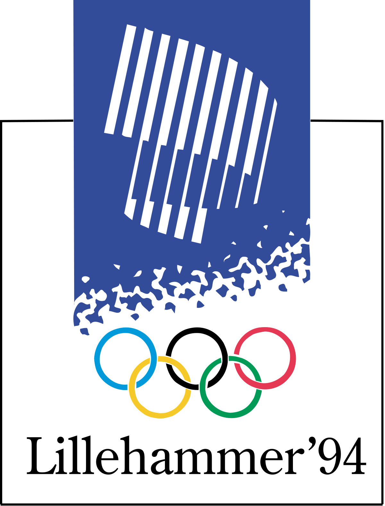
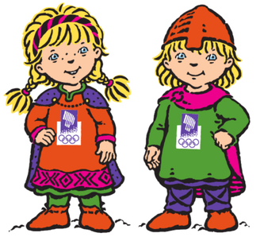
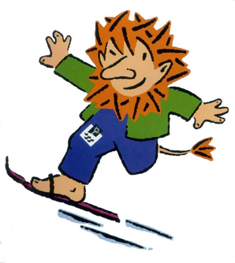

The Winter Olympics
Lillehammer 1994
Date
12 Feb - 27 Feb
Country
Norway
Countdown
Once Upon a Time
Website
Events
61
Stadium
Lysgårdsbakkene
Facts
The 1994 Olympics were noteworthy for their environmental conservation
Useful Links
History of the Olympics
The International Federation
National Olympic Committees
Members
Sports Arbitration
Presidents
 